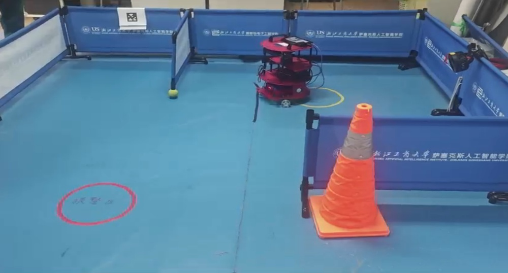
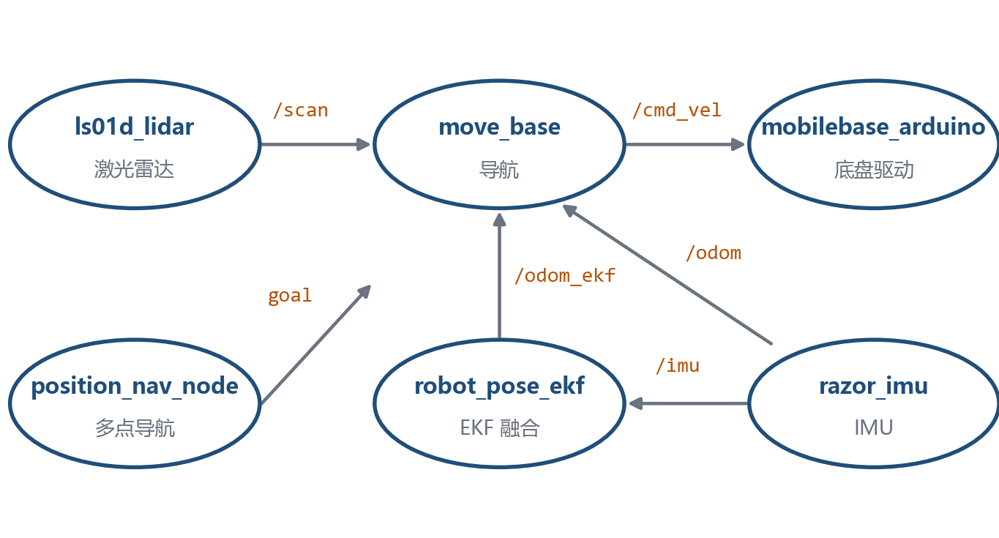

ROS 家庭助老服务机器人
课程项目实践
系统集成与调度开发
面向居家助老场景的三轮全向底盘 ROS 机器人，实现建图定位、自主导航与语音交互全流程。我负责导航定位算法部署与整机联调。

定位建图
- 九轴 IMU + 扩展卡尔曼滤波（EKF）位姿融合（robot_pose_ekf）。
- 系统集成 GMapping 激光 SLAM 建图与 AMCL 自适应蒙特卡洛定位功能包。
自主导航
- DWA 局部路径规划；move_base 导航框架 + 多点导航调度。
- 三轮全向底盘运动学解算 + 轮式里程计（Arduino 底盘驱动节点）。
人机交互
- TTS 语音播报 + AprilTag 站点校验，到点语音提醒服药。
